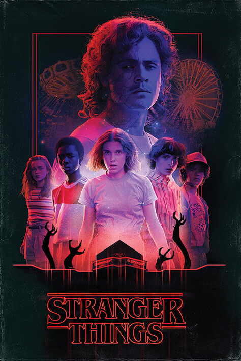

«Дивні дива» (англ. Stranger Things) — американський науково-фантастичний серіал, створений братами Даффер для сервісу Netflix. Перший сезон був опублікований 15 липня 2016 року на офіційному сайті телеканалу. У вересні 2019 року серіал було продовжено на четвертий сезон. Він буде розділений на дві частини, які вийдуть 27 травня та 1 липня 2022 року відповідно. У лютому 2022 року серіал було продовжено на п'ятий і останній сезон.
Сюжет розвивається в 1983 році в штаті Індіана, де таємничим чином зникає хлопчик, а його мати, друзі й шеф місцевої поліції починають пошуки зниклого. Серіал отримав високі оцінки телекритиків, які відзначили атмосферність, акторську гру і відсилання до жанрових фільмів 1980-х років.